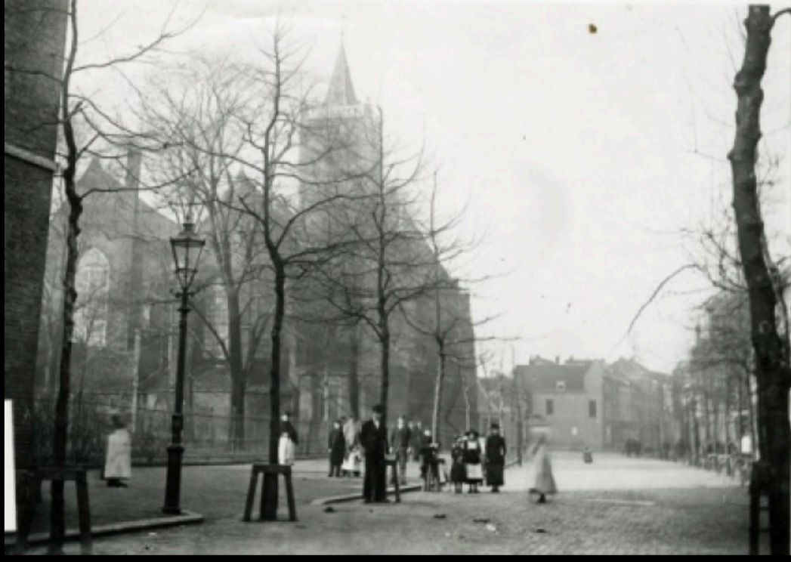

Introductie
Voor ons profielwerkstuk hebben wij gekozen voor een bijzonder onderwerp uit onze stad, namelijk de heksenverbrandingen in Schiedam. Schiedam speelt een belangrijke rol in de Nederlandse heksengeschiedenis, zowel door het hoge aantal vervolgingen als door beroemde zaken zoals die van Neeltje Andries en Marytje Arendsdochter.
Wij wilden begrijpen hoe het mogelijk was dat vrouwen, voornamelijk, door andere buren en stadsbewoners konden worden beschuldigd van hekserij, en hoe deze beschuldigingen konden leiden tot marteling en executie van de verdachten. Daarnaast onderzochten we hoe twee vrouwen uit Schiedam, Neeltje en Marytje, de geschiedenis wisten te veranderen door in hoger beroep te gaan bij de Hoge Raad.
Deelvragen
- Waarom wilde men in Schiedam heksen verbranden?
- Waarom bekenden de heksen?
- Hoe werd bepaald wie een heks was en welke methoden werden daarbij gebruikt in Schiedam?
- Waar vonden de processen en verbrandingen plaats, en waarom juist daar?
- Wat was er zo speciaal aan de Schiedamse heksen vergeleken met die in Roermond of Duitsland?
- Waar ontmoetten de Schiedamse heksen volgens hun bekentenissen de duivel?
Antwoorden op de deelvragen
Deelvraag 1: Waarom wilde men in Schiedam heksen verbranden?
In Schiedam geloofden mensen in de 16e eeuw dat heksen een pact met de duivel hadden gesloten. Men dacht dat deze vrouwen daardoor ongeluk, ziekte of rampspoed konden veroorzaken voor hun buren, hun vee of de stad zelf. Zij waren de zondebok. Uit angst voor deze bovennatuurlijke dreiging werden de vermeende heksen gevangen genomen en soms verbrand, om zo de gemeenschap te beschermen tegen het kwaad.
Deelvraag 2: Waarom bekenden de heksen?
Tijdens de heksenprocessen in Schiedam werden de beschuldigden vaak gemarteld of onder zware druk gezet om een bekentenis af te leggen. De reden dat zij bekenden, was dus niet omdat ze daadwerkelijk hekserij hadden gepleegd, maar omdat zij anders de marteling niet konden ontlopen. Daarnaast speelde psychologische druk een grote rol: de angst voor publieke veroordeling of de uiteindelijke straf, zoals verbranding, leidde ertoe dat sommige vrouwen een bekentenis uitspraken om hun leven te sparen.
Een bekend voorbeeld hiervan zijn de twee Schiedamse vrouwen Neeltje Andries en Marytje Arendsdochter. Zij werden door de baljuw van Schiedam en later door het Hof van Holland onder druk gezet, waardoor ze hun onschuld moesten verdedigen. Om marteling te voorkomen, maakten ze gebruik van een juridische strategie genaamd ter purge gaan, waarbij zij zichzelf vrijwillig lieten opsluiten zodat hun zaak serieus onderzocht werd. Dankzij hun doorzettingsvermogen en het hoger beroep bij de Hoge Raad konden zij aantonen dat bekentenissen onder dwang vaak onbetrouwbaar waren.
Deelvraag 3: Hoe werd bepaald wie een heks was en welke methoden werden daarbij gebruikt?
In de 16e eeuw waren er geen wetenschappelijke methoden om te bepalen wie een heks was en wie niet. Het oordeel was daarom vooral gebaseerd op roddels van buren en getuigenverklaringen. Buren en stadsbewoners konden iemand beschuldigen van hekserij, vaak andere vrouwen. Deze beschuldigingen ontstonden meestal uit jaloezie, onenigheid of angst.
Bij Neeltje Andries en Marytje Arendsdochter werd bijvoorbeeld beweerd dat ze schepen hadden laten zinken en dat een buurmeisje ziek werd nadat zij contact had gehad met Marytje. Ook persoonlijke conflicten of ruzies konden leiden tot verdenkingen; een buurvrouw kon zomaar iemand van hekserij beschuldigen. Daarnaast werden misoogsten en miskramen vaak verklaard als het werk van heksen. Zodra een verdachte bekende, gebeurde het vaak dat zij onder marteling andere namen noemden, waardoor meer mensen werden beschuldigd en de heksenvervolging verder werd aangewakkerd.
Deelvraag 4: Waar vonden de processen en verbrandingen plaats, en waarom juist daar?
De heksenprocessen en executies in Schiedam vonden vooral plaats op openbare plekken in de stad, zoals de Grote Markt en het oude stadhuis. Deze locaties waren centrale plekken waar veel mensen samenkwamen, waardoor de processen en verbrandingen publiekelijk werden uitgevoerd. Het doel hiervan was tweeledig: het afschrikken van andere burgers en het tonen van de macht van de autoriteiten.
Het uitvoeren van de processen op centrale openbare plaatsen was ook praktisch. De brandstapel en andere executies moesten zichtbaar zijn, zodat burgers konden zien wat er gebeurde. Leerlingen spijbelden van school om de gebeurtenissen te bekijken, en ook docenten lieten dit vaak toe. Kinderen zaten op de schouders van hun ouders om een goed uitzicht te hebben. Het onderwerp had zo een grote impact dat vrijwel de hele stad erbij betrokken was.
De Grote Markt en het stadhuis vormden het hart van het stadsleven, waardoor een verbranding of terechtstelling grote invloed had op de gemeenschap en een duidelijke boodschap van gerechtigheid en controle overbracht.

Deelvraag 5: Wat was er zo speciaal aan de Schiedamse heksen vergeleken met die in Roermond of Duitsland?
De heksenprocessen in Schiedam waren bijzonder omdat twee beschuldigde vrouwen in hoger beroep gingen bij de Hoge Raad van Holland en Zeeland, het hoogste gerechtshof van Holland. Deze twee vrouwen werden uiteindelijk vrijgesproken. Dat was uitzonderlijk, want in veel andere gebieden, zoals Roermond of delen van Duitsland, werden mensen die van hekserij beschuldigd werden vaak na een bekentenis ter dood veroordeeld en verbrand.
De vrijspraak door de Hoge Raad liet zien dat bekentenissen die onder marteling waren verkregen niet betrouwbaar waren. Daardoor werden rechters in Holland daarna voorzichtiger met heksenprocessen, en nam de vervolging van vermeende heksen sterk af.
Deelvraag 6: Waar ontmoetten de Schiedamse heksen volgens hun bekentenissen de duivel?
Volgens de bekentenissen tijdens de heksenprocessen in Schiedam zeiden sommige beschuldigde vrouwen dat zij de duivel hadden ontmoet en een afspraak met hem hadden gemaakt. Zulke verhalen kwamen naar voren tijdens de verhoren in de rechtszaak. In veel heksenprocessen in Europa vertelden beschuldigden dat ze de duivel ontmoetten tijdens geheime bijeenkomsten met andere heksen. Deze bijeenkomsten werden vaak 's nachts gehouden. De verhalen uit Schiedam passen bij dit soort bekentenissen die ook in andere Europese heksenprocessen voorkwamen.
Neeltje Andries en Marytje Arendsdr
Neeltje Andries (ca. 1527–1603)
Neeltje Andries woonde vanaf ongeveer 1558 in Schiedam en werkte in de houthandel. Rond 1587 gingen er geruchten dat ze aan toverij deed. Ze liet zich vrijwillig opsluiten om bewijs te verzamelen, maar werd vrijgesproken.
In 1591 werd ze opnieuw beschuldigd van ziekten veroorzaken, miskramen en scheepsrampen. Neeltje verdedigde zich goed en bracht 42 getuigen mee, waaronder oud-burgemeesters en leden van de stadsraad. Het Hof van Holland wilde dat ze gemarteld werd, maar de Hoge Raad verbood dat. Op 13 juli 1593 werd ze volledig vrijgesproken. Later hertrouwde ze en overleed in 1603.
Marytje Arendsdr (ca. 1570–1601)
Marytje Arendsdr werd ook in 1591 beschuldigd door haar buurvrouw. Ze zou ziekten, verlamming en blindheid hebben veroorzaakt en meegedaan hebben aan duivelse dansen. Ze volgde dezelfde verdediging als Neeltje en kreeg steun van dezelfde 42 getuigen. Ook zij werd vrijgesproken door de Hoge Raad op 8 juli 1593.
Na deze vrijspraken werd het bijna onmogelijk om vrouwen in Holland nog te vervolgen voor toverij.
“Na dit vonnis leek het alsof alle toverij uit het land was verdreven — sindsdien was het in Holland vrijwel onmogelijk geworden een van toverij beschuldigde vrouw strafrechtelijk te vervolgen.”
— Gebaseerd op de biografie van Marytje Arendsdr, Huygens Instituut voor Nederlandse Geschiedenis (Vrouwenlexicon)
Onderzoeksmethode
Primaire en secundaire bronnen
Voor ons onderzoek hebben we twee soorten bronnen gebruikt:
- Primaire bronnen: originele documenten uit de tijd zelf, zoals archiefstukken, rechtbankverslagen en andere stukken uit de zestiende eeuw. Die laten zien wat er toen echt gebeurde.
- Secundaire bronnen: boeken, artikelen en onderzoeken van historici die uitleg geven bij die oude documenten en helpen begrijpen wat er gebeurde.
Belangrijke bronnen zijn de procesverslagen uit het Gemeentearchief Schiedam en de archieven van de Hoge Raad, en de biografieën van Neeltje Andries en Marytje Arendsdr van het Huygens Instituut.
Betrouwbaarheid van bronnen
Bij het beoordelen van bronnen letten we op:
- Wie de bron heeft geschreven en waarom.
- Wanneer de bron is gemaakt, hoe dicht bij de gebeurtenissen.
- Waarom de bron is gemaakt: verslag, verdediging, of propaganda?
- Controle: vertellen andere bronnen hetzelfde verhaal?
Niet alles uit de zestiende eeuw is bewaard gebleven. Van sommige processen zijn geen documenten meer, dus die kunnen we niet onderzoeken. Daarnaast zijn veel primaire bronnen in oud-Nederlands of Latijn.